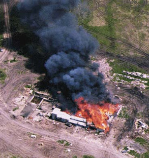

The Regime has made it official that "right-wing extremism" is a threat to Homeland Security.
That genus is divided into two species -- "white supremacist and anti-government groups" -- with the latter further differentiated into various sub-species, including immigration reform activists, "disgruntled military veterans," gun rights advocates, members of citizen militia groups, anti-globalists, constitutionalists, "hate groups," and others deemed politically unsuitable by the Regime.
About two years ago, Congress was presented with a measure entitled the Violent Radicalization and Homegrown Terrorism Prevention Act. Its first offspring was to be an official commission to examine potential content-based Internet restrictions.
Although this bill eventually dead-ended in the Senate, at some point the Regime swiped some of its genetic material and used it to create a specialized section within the Homeland Security Department called the Extremism and Radicalization Branch (which we'll call the ERB). [See update/correction below.]
This means that for the first time in American history, the federal government has a full-time intelligence organ devoted exclusively to scrutinizing the political opinions and affiliations of U.S. citizens. It is difficult to overstate the importance of this development as a milestone in our nation's apostasy from its founding as a constitutional republic.
Earlier this month, the ERB's "Homeland Environment Threat Analysis Division" issued a nine-page "Intelligence and Analysis Assessment" of "right-wing extremism" for the supposed benefit of state and local law enforcement agencies. That document consists of reheated leftovers from several previous "intelligence analyses" of the "radical right," including the FBI's notorious 1999 Project Megiddo broadside.

Echoes of a decade ago: A "terrorist threat" assessment issued in 1999 by the Phoenix FBI Joint Terrorism Task Force identified "constitutionalists" as a potential threat -- but didn't mention the possibility of a backlash from Muslim radicals riled up by Washington's foreign policy.
The ERB report concludes with the observation that the Department of Homeland Security "will be working with its state and local partners over the next several months to ascertain with greater regional specificity the rise in rightwing extremist activity in the United States, with a particular emphasis on the political, economic, and social factors that drive rightwing extremist radicalization."
This is significant chiefly because it acknowledges that every "local" police agency in the United States is now a sensory organ, and enforcement appendage, of the Homeland Security State.
As partners with the Department of Homeland Security, your thoughtful and friendly "local" police and state police will be expected to gather intelligence on "extremists" within their jurisdictions and provide it to the Feds. And in the event that they're required to do so by their "partners" in Washington, those same state and "local" police will be expected to question, arrest, or detain those designated to be severe risks to "homeland security."
In this connection it's useful to remember that the Obama administration has taken care to preserve all of the necessary Bush-era precedents regarding the summary imprisonment of those designated "unlawful enemy combatants" by presidential decree, the suspension of habeas corpus, and even the practice of torture as a means of "enhanced interrogation."
The prospect of the exercise of those powers by the incumbent is causing a loss of bladder control among many of the same GOP-aligned polemicists who insisted that they were perfectly safe when placed at the disposal of his predecessor. This development was as predictable as the "plot" of a porno film. And as Salon's admirable civil libertarian columnist Glen Greenwald emphasizes, the report on the "radical right" was actually begun under the Bush administration.

Putting a meme into play: This magazine cover, which appeared roughly a year ago, anticipated one of the themes of the recent Homeland Security Department assessment of the "right-wing threat" -- namely, that there may be a violent, racially motivated "backlash" against the Obama administration.
In the institutional memory of the American Right, the early Clinton years were characterized by two entirely unnecessary atrocities involving culturally isolated "extremists": The attack on the Randy Weaver family at Ruby Ridge, Idaho -- which led to the murder of Sammy and Vicki Weaver -- and the 51-day standoff at Mt. Carmel, Texas, which culminated in the holocaust of April 19, 1993.
The unbearable memory of those episodes, exacerbated by the "assault weapons" ban, did much to catalyze resistance to the Clinton administration. Prior to the Oklahoma City bombing, there was a widespread, and growing, appreciation for the lethal potential of what we could call the federal government's "Waco gene" -- its latent tendency to isolate, dehumanize, criminalize, and even annihilate those considered to be incorrigible internal enemies.


But although this early Clinton-era anti-government backlash was rooted in worthy and entirely justified sentiments, it was poorly focused in one fairly significant respect: Clinton and his properly maligned Attorney General Janet Reno had relatively little to do with the planning and execution of the ATF's assault on the Branch Davidians, and nothing at all to do with the criminal assault on the Weaver family. Those were anti-"extremist" initiatives planned and/or carried out by the administration of George Bush the Elder.
(It's not my intention to demolish a straw man by mentioning Ruby Ridge in this connection; on many occasions I've heard that incident paired with Waco when people have recited the litany of the Clinton administration's crimes.)
During the reign of Bush the Dumber, the GOP-aligned punditocracy insisted that only "peace creeps" and people who perversely sympathize with suicide bombers were outraged over the executive branch's assault on the Bill of Rights.

When Bush put the chainsaw to due process guarantees running back to Runnymede and mowed them down like so much overgrowth on his postage-stamp "ranch," some principled voices -- with Ron Paul, as always, leading that tiny chorus -- took up a refrain similar to that put in the mouth of Sir Thomas More when his son-in-law William Roper urged a similar clear-cutting approach to the law.
After the contemptible opportunist Richard Rich* comes fishing for a bribe, baiting More with the implied threat of blackmail, More's family urges him to have Rich arrested. When More points out that Rich hadn't broken the law, and that even "the Devil himself" is entitled to the protection of the law, Roper angrily exclaims that he would "cut down every law in England" to get to the Devil.
"And when the last law was down and the devil turned round on you, where would you hide, Roper, the laws all being flat?" More inquired. "This country's planted thick with laws from coast to coast -- man's laws, and not God's -- and if you cut them down--and you are just the man to do it--do you really think you could stand upright in the winds that would blow then? Yes -- I'd give the Devil benefit of the law for my own safety's sake."
***
***
Transfixed by the demonic evil of Islamic terrorism, intoxicated by a sense of vindictive righteousness, the Republican Right eagerly collaborated in the effort to mow down legal protections for those designated enemies of the state. With the frustrated puzzlement of dimwitted children they now find themselves naked and shivering in the ill winds so memorably described by More.
For a long time, conservatives have extracted much undeserved pleasure from the aphorism that "A law-and-order conservative is a liberal who's been mugged." Now they're given an opportunity to learn the truth of its counterpart: "A civil libertarian is a law-and-order conservative who suffered an ass-beating at the hands of the police." Perhaps this lesson could be learned -- but, given the propensity of conservatives to miss the obvious and resist admissions of error, I'm not optimistic.
One aspect of the ERB's "Intelligence Assessment" that offers cause for unintended mirth is the concern it expresses over the possibility that the ongoing economic collapse is being "exploited" by "rightwing extremists." The unspoken corollary here, of course, is that our rulers us would never exploit economic or political upheavals in order to aggrandize their own power -- the well-documented eagerness of both the Bushi'ites and the Obamatrons not to "let a serious crisis go to waste" notwithstanding.
The all-gathering "ear": This grotto on Syracuse, known as "Dionysus's Ear," has unique acoustic properties that amplify even the softest whisper. According to legend, the tyrant Dionysus imprisoned political enemies in or near this cave and his secret police exploited its eavesdropping potential in their efforts to root out dissent.

You see, according to the Collectivist Lexicon, when those exercising the powers of government suspect the worst of the people they rule, it's called vigilance; when those on the receiving end of government power suspect the worst of their rulers, it's called paranoia.
In the interest of clarity, I should point out that, as the term is typically used today, a "paranoid" is someone who notices things without government permission. Similarly, a "conspiracy theorist" is anyone who draws unacceptable anti-government conclusions from politically inconvenient facts.
A "hate group" consists of any group of people who are hated by collectivists.
And a "terrorist" is anyone, anywhere, who is imprisoned, tortured, or killed by the state with extreme prejudice. In the near future we may see some interesting applications of that infinitely flexible definition.
When citizens are hyper-vigilant toward government, liberty is one possible result. Where government is hyper-vigilant toward is subjects, tyranny is the inevitable outcome.
Update/correction, April 20:
In the original version of this essay, I mistakenly reported that the "Violent Radicalization and Homegrown Terrorism Act of 2007" (VRHTA) was enacted by Congress and signed into law. A sharp-eyed and well-informed contributor to the comment thread caught this mistake. It does seem clear that the section of the Homeland Security Department responsible for the "assessment" of the supposed right-wing threat is a product of the same ferment within the police state apparatus that inspired the VRHTA. I sincerely regret my earlier error.
___
*A painful personal admission: Richard Rich, the despicable invertebrate who betrayed the heroic St. Thomas More, is a distant ancestor (by adoption, I hasten to point out).
 On sale now.
On sale now.Dum spiro, pugno!
48 comments:
'Department of Homeland Security will be working ... to ascertain with greater regional specificity the rise in rightwing extremist activity in the United States.'
Duh. Why don't they just look at an electoral map? The 'rightwingers' (by liberal Democrat standards) will be found in the South, the Plains, and the intermountain West. No secret about that.
This does sound like a great way to polarize the country (more than it already is) and feed the emerging Tenth Amendment revolt.
In a larger sense, though, it's revealing that Usgov is still stuck in the obsolete leftwing/rightwing framework. Being run by a permanent two-party duopoly, it sees the country through its stopped-down red/blue lens, missing all the other colors on the periphery of its vision.
Populism, to name one example, doesn't necessarily fit on a convenient left/right axis. Many people from all across that spectrum are united in regarding corporate bailouts and profligate money printing as a plutocratic looting operation.
Feelings toward the remedy for this grand theft -- secession -- are regionally diversified as well. Vermont, the South, Cascadia, the Republic of Texas -- all just want THE HELL OUT of this rapidly unraveling kleptocracy. Last one out is a rotten egg.
While what I'm about to mention doesn't rise to the level of purported hate or extreme groups that the Gubmint is so busy cataloging, it does paint a picture in miniature of the diseased creeeping mindset that is out there.
I was listening to a news report this morning (in Idaho) where it was announced that the town of Eagle (where I live close by) was going to postpone a decision on a smoking ban to further "study" how it would impact business. Oh really? Seems innocuous enough on the surface but it's that sort of mentality, that socialist "group-think", that disturbs me.
My inner cynic tells me that the influx of socialist Californians into the area, and the tendency, dare I say the genetic disorder that is latent within these robots made flesh, is to pronounce diktat after diktat upon the unsuspecting.
All of this is touted as progressive and "caring" by the usual cast of characters i.e those doing the "pronoucing". Those opposing it are broadly painted as out of touch or somehow harboring a secret hateful desire to poison people so they drag that old shiboleth out of the closet... "the children".
Never mind that nobody is pointing a gun at anyones head and forcing them to eat or shop or even work at any particular establishment. If you don't like it then either speak with the management/owner, go somewhere else, or open your own establishment catering to those of a similar mind. I believe it was called free association at one time.
All of this sadly reminded me of a friend who because he doesn't like cigarettes in restaurants agreed with the same cancerous idea in my former home town. Seemed that so long as those wielding the club where doing it "for him" he didn't seem to care. The sad irony is that very club can come crashing down on his own head and on what moral ground would he argue that it was wrong! When I pointed this out to, before his own lawyer father, I didn't get an answer from either one. Sort of like selling your birthright for a bowl of porridge.
In previous articles down this blog line and posts by readers I was reminded of how I traveled and lived abroad and never encountered the evil nonsense that is jammed down peoples throats here in what is purported to be a "free" country except for the time I traveled to East Germany to visit those relatives of mine who failed to escape.
Another great post. I love the conclusion with the explanation of how loaded words are applied. "Conspiracy Theorist/Nut/Wacko (pick your pejorative suffix)" I have come to understand as a sort of political version of a heretic.
I find it very interesting that right as there is a ground swell of grass roots opposition to the growing apparatus with its sights aimed at the American people we get the OKC Bombing blamed on the opposition to the Leviathon state.
Looks like the anglo-marxist west is going the route of good old fashioned fascism. I always wondered what it would be like to live in nazi era germany. Oh goody it looks like i'll be able to find out firsthand.
I'd just like to know why the thuggy lesbians are always named Janet?
I'm reminded of Madison's musings in The Federalist #10.
Federalist #10 explains why the founding fathers chose a republican form of government over a democracy. People can be spread out over a wider area in a republic, making them easier to control. With the people spread out they couldn't form their little "factions," which seemed to be the bane of the founders' existence. ("Factions," I think, meant tax protesters.) That's what it seems like, maybe it's just me.
I wonder how long it will be before they take the next logical step, mass incarcerations? And worse.
"with the latter further differentiated into various sub-species, including immigration reform activists, "disgruntled military veterans," gun rights advocates, members of citizen militia groups, anti-globalists, constitutionalists, "hate groups," and others deemed politically unsuitable by the Regime." - Yes, and my dream is to make every one of those lists!
God Bless Timothy McVeigh, and may what's left of Amerika survive long enough to see 1,000,000 more like him.
Why would anybody bless the memory of that murderous disgruntled ex-federal employee?
Because, apparently, his/her god is someone or something entirely different from the Living God.
For what it's worth, the Ruby Ridge assaults were not just planned under old George Bush, they took place while he was still president.
I would give the devil the benefit of the law for my own safety's sake and I would give terror suspects the benefit of the law for my own safety's sake.
I suppose that the email that I sent to my state rep. politely outlining my extreme displeasure with the recent state tax induced 460 percent increase in the price of the tobacco product that I (formerly) consumed will result in me getting placed on some sort of list. We helots are expected to be to be submissive and uncomplaining no matter how much they screw us over.
"God Bless Timothy McVeigh....."
Anonymous @ 12:51, that benighted soul had the right motivations, but the wrong methods. I have said before on this blog that Mr. Grigg's essays demonstrate most clearly that "Moral ends NEVER justify immoral means." McVeigh had checked the building beforehand, and knew that there was a daycare center located on the lower floors at the front of the building. How could a sane human being have proceeded with such an operation, knowing he was murdering innocent babies and tots? That was monstrous.
What is more important to contemplate is (1) How pieces of the building and truck managed to fly over or through the blast field and land up hundreds of feet away on the other side? Answer: There was another bomb inside the building. Many demolitions experts looking at the deformation of the rebar in the pillars have said so. (2) The only Federal office in the building that was closed that day was the BATF. Nobody has asked why or how. Did they give all the employees the day off? Were they all on a picnic, every last one? That stinks like a dead fish, but neither the "enquiry" nor the corrupt media have ever raised the question.
Enough of that. Mr. Grigg, another fine essay. You certainly have a way with words and a talent for the pithy aphorism.
Do you know what I believe is the fundamental problem underlying everything you write about? It is that some 90% of the American public are totally selfish and self-absorbed: "I'm doing just fine, moron. F**k you."
Not their fault - this is the way our media and the corporatocracy and Madison Avenue and Hollywood and the educational system have trained them to be, like a vast troop of performing seals.
And the reason they have been trained to think this way is that it makes the citzenry easier to control. The power elite can pick off individuals by the thousands, one by one, and the rest do not give a damn, because it's not happening to them.
Only that small percentage who see "the other" as their brother, find it in their hearts to care. In the parable of the Good Samaritan, the significant fact is that many Jews, Sadducees and Pharisees passed by on the other side from the sufferer, before at last the Samaritan - the enemy of the Jews - chose to stop and help.
Countries and societies vary in their relative percentages of the selfish and the selfless. It is much, much more pleasant living in a culture where human beings care about each other, and not just about how many material assets they can grab or steal from each other and the system.
This is one benefit of traveling abroad - you get to experience more civlized cultures than this American one. A degree of love for one's fellows arises in the heart, and one feels kinship amd companionship with other human beings. People become polite, and considerate, and kind. It is wonderful. It is what Christ spoke about: "Love thy neighbor." Many of the people of America who talk so much about their belief in Christ are less Christian than some of the atheists of Europe.
Time and time again in America, I have seen where people just do not care about others, even when they could do them immense good at no cost whatever to themselves: "I'm doing just fine, you little turd. F**k you, asswipe."
What a lonely society we live in. No wonder people like Timothy McVeigh are in so much emotional pain they have no room even for feelings of regret at murdering babies.
Yours sincerely,
Lemuel Gulliver.
Mr. Grigg,
My apologies for offending your sense of fairness, justice and morality by my earlier comment "God Bless Tim McVeigh". I have the greatest respect for you and wish more of our countrymen (and women) had your wisdom, intelligence, determination and thirst for the Constitution, Justice and Freedom. My position on the OKC event is mixed as 1. I AM a Christian so in that regard believe that murder is a sin. 2. I lived and grew up in the OKC area, I visited the Murrah Memorial, I cried for the slain children (whom all of which were however offspring of the govt masters and govt teat-feeding leach classes). I have long maintained the position that McVeigh (if he actually did the deed and it was not a Govt planned diversion) had the RIGHT TACTIC but the WRONG TARGET.
However, I am also convinced that the time and the possibility for a peaceful change and return to a Constitutional Republic has long since passed. The ONLY option we (ie, freemen/Christians Libertarians/Free Market followers/HUMANS) have to defeat the beast is to slay it. Armed, aggressive, brutal and merciless revolution is our only option. Is this the path I wished for, hoped for, prayed for or desired? NO! It is the circumstance forced upon us by the evil beast in DC/London etc. I wish there was another way. Truly I do. At my age, I feel fairly certain I will not live to see the day that Amerika is again "free". God bless you and your efforts to reach out, wake up the masses, inform and educate.
Regarding OKC and the Murrah Building, I've always wondered why one question is never asked: "Why was there a daycare center in a federal building in the first place?" Especially a building housing one the 'Good Ole Boy' of BATF - clearly one of the most cretinous agencies of Leviathan's creation.
They couldn't have been hiding behind the children, could they . . .
And isn't it also curious that McVeigh was 'disposed of' with the same rapidity of Saddam Hussein? An unheard of speed in today's legal system, but then again dead men tell no tales . . .
Sic Semper Tyrannis
How could a sane human being have proceeded with such an operation, knowing he was murdering innocent babies and tots? That was monstrous.No question. Equally monstrous, IMO, is to have put such tiny innocent victims in harm's way by establishing a daycare center inside of this fortress of Statist repression that by its very nature and purpose is a prime target for "terrists." Such an act is akin to using these little ones as "human shields", as Saddam Hussein did with Westerners inside of Iraq prior to the U.S.-led coalition invasion (Desert Storm) and as Palestinian freedom fighters have been accused of doing in Lebanon and Gaza. No one can tell me with a straight face that the fedthugs in charge of the Murrah Building were unaware of the danger in which they put these children. Outbursts of violence inside of government office buildings have by no means been rare and isolated incidents. Indeed, my deeply cynical mind tells me that these arrogant, manipulative cretins foresaw very clearly the propaganda value of a tragedy such as that which occurred on April 19, 1995. After all, wouldn't even the most bitter foe of government rally behind the State to hunt down and prosecute murderers of babies? What better smokescreen with which to divert attention away from the murderous acts of tyranny committed by the State's armed thugs?
Anonymous @ 7:08. I still can't square your logic with the teachings of not only the Bible, but many others who were/are lovers of liberty. You say McVeigh had the "right tactic" but the "wrong targets."
For the sake of argument, assume McVeigh did it. Would his individual mericiless action be any different from the collective action of merciless federal bureaucrats? I have relatives who are part of the revolting tyrannical bureaucracy that emanates from not only Washington but my home state as well (or do I repeat myself?). These people are terribly misguided. The least we can afford them is due process of law (remember the "Man For All Seasons" clip?)
As to your point about revolution. Be careful what you wish for. Jefferson himself got caught up in the misguided idealism of France when he opined about the necessity of revolution every twenty or so years. Look what happened in the French Revolution. I understand there were very different actors and motivations in that bloody event, but, nonetheless, there are relevant lessons we can draw from that event. Also, we would do well to remember that the American War for Independence was just that -- a war to gain autonomy from England. Secession does not start with violence -- although it may eventually be necessary. Rather, it starts with the dissemination of ideas and peaceful acts. Make sense, not war!
McVeigh was a patsy like Oswald. Kennedy made a speech about a month before he was killed where he said he would disband the CIA and federal reserve. Why no mention of the middle eastern looking gentlemen? A fertilizer bomb?, please don't insult peoples intelligence. Where is the surveillance camera footage of OKC? Officer Buford T. Justice pulls McVeigh over hours afterward? Riight. No wonder the elites smirk and laugh at us.
Mr. Riggs,
CC: Timothy 'TruthSeeker'Pity impartiality ain't a high pre-requisite for some who call themselves 'libertarians'; but that happens to be true for communists, socialists, liberals, and conservatives too. So whats new?
People who prefer to draw conclusions and malign other people as vicious murderers, who killed for no reason; but who have done absolutely nothing to do a full impartial enquiry into all the evidence (in this case thousands of pages of evidence have yet to be released by among others the CIA, Pentagon and NSA, in the matter of the OKC Bombing, but don't let that bother you about issues such as those moronic concepts of a free and fair trial, and impartial juries and judges -- fuck those obscenities, when you can crucify a Patriot).
And for those who alleged he was a mass murderer; what do you think you do when you are in a Guerrylla War? Sing Kumbaya and hold hands?
How many times have you rented THE PATRIOT, and got all gooyee eyed with Pride? What is wrong with you when you cannot see A PATRIOT in real life, but only one Hollywood plays for you on your television?
Wake up! I think most of you resent McVeighs BRASS BALLS AND COURAGE, NOT TO MENTION HIS BRUTAL HONESTY, and the FACT that he KNEW what his RIGHTS and DUTIES were in accordance with the DECLARATION OF INDEPENDENCE, and had the BALLS to ACT on those RIGHTS and DUTIES.
So the marshmallow ball brigade of cowards and wimps, want to sit around and malign him. Go ahead! Thats what cowards do. He died standing on his feet, you will probably die on your knees in one of the camps the Goverment he took on, have planned for you and your wimpy family.
For those of you unaware, McVeigh's defense was to be POLITICAL NECESSITY -- look it up; based upon an ACT OF WAR, against the US Goverment (yes the same one happily targetting you all as extremists), for the US Goverments long train of absuses, since at the very least 1913, AS PER:
But when a long Train of Abuses and Usurpations, pursuing invariably the same Object, evinces a Design to reduce them under absolute Despotism, it is their RIGHT, IT IS THEIR DUTY, TO THROW OFF SUCH A GOVERMENT, and to provide new Guards for their future Security.
And yet you know the mainstream media lies to you -- but when it comes to Timothy McVeigh, they were telling you the truth? Get REal! Wake up!
Pity foriegners know the principles of the Declaration of Independence, and can recognize REAL AMERICAN PATRIOTS, WHO KNOW WHAT THEIR GODDAMN RIGHTS AND DUTIES ARE, AND WHO ACT ON THEM, more than Americans, who are too busy watching fucking Baywatch, Oprah and the Jerry Springer Show.
So for the few of you, who are remotely interested in impartiality regarding the opinions of McVeigh prior to his 'execution'; you may find them from Outpost of Freedom.
FOR THE RECORD: In November 2001, Timothy McVeigh's Commanding Officer in the Oklahoma City Bombing, John Doe # 2, requested permission from his Pentagon Commanding Officer, to reveal information related to the OKC Bombing Attacks, for the purposes of good faith release, towards FULL DISCLOSURE and RADICAL HONESTY AND FORGIVENESS AMNESTY HEARINGS, as requested of the US Goverment, by the DISCLOSURE PROJECT WITNESSES. John Doe #3's request was approved by the Pentagon. NOT ONE MEDIA OUTLET IN THE UNITED STATES OF AMERICA WAS INTERESTED IN JOHN DOE # 2'S INFORMATION!
If you can find a copy, read "OKLAHOMA CITY: DAY ONE" by Michelle Moore.
THERE IS A LOT MORE TO THAT STORY THAN MEETS THE EYE.
The Reichish-sounding Department of Homeland Security should NEVER have been established, period! The "Patriot" Act should NEVER have been passed, either.
Thanks again, "W!"
It sure sounds like( in reference to T McVeigh @4;43)we have a paid undercover working for the DHS now commenting on articles written in Pro Libertate Blog. Ahh the never ending waste of time and resources by the US Fed Gov never ceases to amaze me.
Anonymous @ 7:24,
Your accusation of TMcV being a government agent is one that is routinely slung these days at people whose words other people disagree with. For the record, I have nothing to do with TMcV, don't even know who he is, but I need to defend him from your glib and unsupported accusation, for which I see no evidence in his posting.
That is not to say that there are not government paid and originated bloggers - there absolutely are - but their usual modus operandi is to obscure the ugly truth with wild and zany conspiracy theories. After a few dozen of those, the public gets tired of the cacophony and drama and loses interest. A very effective tactic.
Anonymous, of the unfortunate turn of phrase, "God Bless Timothy McVeigh" - you say: "However, I am also convinced that the time and the possibility for a peaceful change and return to a Constitutional Republic has long since passed. The ONLY option we have to defeat the beast is to slay it."
I sometimes agree wholeheartedly and viciously with that sentiment, usually after my dinner has failed to agree with me, and my mood deteriorates. I have advocated burning, flaying, castration, guillotining, and worse on this blog. However, my friend, the problem you and I must face is: WHO IS THE BEAST? Was it those Federal employees in OKC and their children? Is it the policemen trained to be aggressive and to regard the public as their enemy? Is it the politicians living in terror of AIPAC and its conrolled media empire? Is it AIPAC?
Or is it, I suggest to you, a small cabal of immensely rich and powerful men pulling the strings on all our lives - Republican and Democrat, rich and poor, white and black, Anglo and Latino, Christian and Jew, so as to ensure we spend all our energy fighting each other and never questioning who benefits by all of it, every bit of it, regardless of which race, party, class, or ethnicity is ascendant?
Think about it.
Someone mentioned JFK above here. Not only did JFK sign an executive order to take away the Fed's power to issue currency and return it to the Treasury; Not only did he declare his intention to disband the CIA; Not only did he initiate overtures to Castro and send envoys to talk about negotiating normalization; Not only did he refuse to invade Cuba (thereby averting certain nuclear war - the Russians had 54 tactical nukes in Cuba and orders to use them if invaded) and retake the casinos and sugar plantations for the US oligarchy and their Mafia friends; Not only did he squash Operation Northwoods which included the mass murder of Americans to rouse the public to support an invasion of Cuba; BUT he also, from bitter experience not trusting his own intelligence agencies and diplomats to avert the next potential nuclear war, initiated a direct channel of communication with Krushchev through his brother Bobby and the Soviet Embassy, which was viewed by the CIA and FBI as high treason to the country.
He had to die. He was costing too many people too many immense sums of money or potential money. He was undermining vast secret powers which had stood for a generation. He was doing things his own way, not doing as he was told. This led him to become a traitor in their eyes. (You must understand that instigating useless wars costing tens of millions of deaths, in pursuit of money and power, is not considered treason by these people.) Exposure (this was before Watergate disillusioned the nation about its leadership) of his treason was judged too damaging to the State apparatus of control; Confronting him directly was judged too risky, since he had already thwarted the CIA, FBI, and military-industrial complex in their ambitions; and that left assassination as the only option.
Now, the reason I raised all that was just to be able to ask you this: If the power elite could murder a sitting President of the United States and get away with it, do you suppose there is anything you or I or Mr. Grigg can do against them?
All we can do is oppose them in whatever small way we can. The more people who realize the truth of their sheep-ish lives in America, the less power these evil monsters will have. Knowledge and truth must be our weapons. Otherwise we will end up fighting each other, as Timothy McVeigh did to his fellow human beings, never realizing that they are also pawns in the game, just as we are.
We don't even know who these shadowy puppet masters are. Probably very few people do. But the CIA, AIPAC, the media, the politicians, the police, the federal agencies, the courts, all do as they are told, not even knowing where the orders originated. The universal method of control in all cases is the threat of the loss of one's career. 99.999% of people, faced with that choice, will shut up and do as they are told, and lie through their teeth about it, knowing that a principled stand would achieve exactly nothing - zero - diddly-squat.
It happened to Mr. Grigg. If you read this, Will, you might care to tell us whether, in your honest judgement, your principled stand changed anything. (Except for prompting you to start this blog.) Yes or no? I truly would like to hear.
Before we "slay the beast," we need to identify it, otherwise we will be just like the "justice" system in this country, which is happy to convict the innocent and let the guilty go free, as long as SOMEONE is seen to suffer for the crimes committed.
Sincerely,
Lemuel Gulliver
Anonymous (07:24PM)
CC: Timothy TruthseekerUSMC Rick BiesadaThe only financial contribution I have received, to share my information related to T. McVeigh, was a $50 check, from former USMC Sgt. Rick Biesada, author of ANGRY WHITE MALE AND THE HORSE HE RODE IN ON (www.angry-white-male.com), to help market his book, in 2003.
If you are serious about your allegation, and interested in viewing my bank deposits or accounts, since May 2001, when I first corresponded with McVeigh (or even prior thereto, to my first bank account, if you wish), let me know (email: JMC Patriot Alert Task Force: jmc.pa.tf[at]gmail.com).
Furthermore, you can ask the IRS if I REFUSED TO PAY TAXES. For your information, I did.
So, perhaps you may wish to stop hiding behind 'anonymous' handles, making accusations against others, you yourself may be guilty of; and put YOUR MONEY WHERE YOUR MOUTH IS, huh?
Lara Johnstone
Fear is the amerikan way. Don't lose your job, you'll be out on the street. Don't get sick you can't afford it. Enjoy that poison frankenstein genetically modified food. Do as your told. Pay your taxes or the big bad IRS will get ya. Go along get along. Keep your head down. Stay off radar screens. Goethe had it right when he said "none are more hopelessly enslaved than those who falsely believe they are free."
Andrea, I thought you weren't going to check this blog anymore because Mr. Grigg and his followers are just too stupid to see what you see and know what you know.
And we don't practice "libertarian procreation principles", if my memory serves me correctly.
Source: The Thomas Moore Law Center
ANN ARBOR, MI – The Thomas More Law Center, a national public interest law firm based in Ann Arbor, Michigan, announced today that it has filed a federal lawsuit against Homeland Security Secretary Janet Napolitano. The lawsuit claims that her Department’s “Rightwing Extremism Policy,” as reflected in the recently publicized Intelligence Assessment, “ Rightwing Extremism: Current Economic and Political Climate Fueling Resurgence in Radicalization and Recruitment,” violates the civil liberties of combat veterans as well as American citizens by targeting them for disfavored treatment on account of the political beliefs.
The lawsuit was filed in the U.S. District Court for the Eastern District of Michigan on behalf of nationally syndicated conservative radio talk show host Michael Savage, Gregg Cunningham (President of the pro-life organization Center for Bio-Ethical Reform, Inc (CBR)), and Iraqi War Marine veteran Kevin Murray. The Law Center claims that Napolitano’s Department (DHS) has violated the First and Fifth Amendment Constitutional rights of these three plaintiffs by attempting to chill their free speech, expressive association, and equal protection rights. The lawsuit further claims that the Department of Homeland Security encourages law enforcement officers throughout the nation to target and report citizens to federal officials as suspicious rightwing extremists and potential terrorists because of their political beliefs.
"God Bless Timothy McVeigh, and may what's left of Amerika survive long enough to see 1,000,000 more like him."When I read people on blogs or forums making statement akin to the above I just assume they are some form of an aganet provacetuer. I found it interesting that in the DHS report it cited the current internet chat of the "Right Wing Extremists". So point taken they tend mill around Libertarian and Constitutionalist type web cites no doubt encouraging the violent radicalization they claim to oppose.
My take is that OKC was an inside job McVeigh was a patsy.
Remember, that guy trying to talk you into taking 1/4 inch off that shotgun barrel is probably taking a government paycheck.
A revolution wouldn't accomplish anything. 100 years under leviathan has corrupted the national character. Americans would run to create exactly what they had torn down. Being essentially idolatrous they would create their new gods in the form of the one just dispatched, only probably even more vicious.
The only answer is evangelism. The Christian community must be shown its false god of "god and Country" so it can regain its savor and be of some use besides being the amen corner for wanton slaughter of foreigners.
Andrea Murrhteyn/Lara Johnstone: You go, girl. Like I said, they love to throw that accusation around.
Bob @ 10:02, of course Timothy McVeigh was a patsy! So was Sirhan Sirhan. So was James Earl Ray. So was Lee Harvey Oswald. So was everybody who was taken in by the Saddam-did-it fairy tale - about 2/3 of the American public and (supposedly) all the media at the time. So is everybody who hates those whom the manipulators tell them to hate.
We're all patsies, people. The Jews of Israel are patsies. The suicide bombers are patsies. The Iranian mullahs are patsies. The Jews of America are patsies. Even Obama is a patsy and doesn't know it yet. If he fails to appreciate that soon and to do as he is supposed to do, they will get rid of him, somehow.
Friends, one and all: Repeat this to yourself 1,000 times each day for the next 1,000 years: "THEY LIED TO US", and by the end of it you will just about get an inkling of the number and extent of their lies.
Take comfort in this thought: We will all die one day, all of us, even "they." All that "they" have built, all that "they" have murdered and lied for, "they" will have to leave behind. "They" will become food for worms, just like the most humble of "their" legions of victims. "They" will be covered in green mold in "their" marble tombs, and "they" will stink like rotten cabbage. None of "their" money and power will avail "them" to escape this end.
Who says there is no God?
Lemuel Gulliver.
Even Obama is a patsy and doesn't know it yet. If he fails to appreciate that soon and to do as he is supposed to do, they will get rid of him, somehow.He most certainly is a patsy - a very willing one. Barack Obama has knowingly sold what little of a soul he ever had for the transitory privilege of sitting at the Power Elite's table (and not even at its head, but as a lower-level employee at a distant corner). He is also doing exactly what he's supposed to do, which is to destroy the foundation of these United States (or what little is still left of it), debase the nation's currency, and persecute those who would stop him from carrying out his masters' orders.
Take comfort in this thought: We will all die one day, all of us, even "they." All that "they" have built, all that "they" have murdered and lied for, "they" will have to leave behind. "They" will become food for worms, just like the most humble of "their" legions of victims. "They" will be covered in green mold in "their" marble tombs, and "they" will stink like rotten cabbage. None of "their" money and power will avail "them" to escape this end.Not to mention that "they", each and every one of them, like all the rest of us, will have to answer to Him The Almighty for what they have wrought here in this life. For many of them, it will be the first time in their existence that they will have met a higher power that they will not be able to control, subvert, or fight back against, and from whom they will not be able to escape accountability for they way they led their mortal lives. This latter fact, more than any metaphorical "burning in the fire and brimstone of hell" will be the most truly insufferable aspect of their eternal existence.
It looks like the Violent Radicalization and Homegrown Terrorism Prevention Act of 2007 actually died in the Senate and was never made law.
"A civil libertarian is a law-and-order conservative who suffered an ass-beating at the hands of the police."
Sorry, but this was simply too funny!
Really well written blog. Thank you for writing it.
Twenty First Century Revolution
http://www.carolmoore.net/waco/
http://www.wizardsofaz.com/waco/picturethis.html
The Commisars want the American people DISARMED, they like their VICTIMS disarmed.
Join these groups NOW, the 2nd Amendment is in its greatest peril.
http://gunowners.org/
http://www.nrahq.org/God bless WNG, his family, and all the rest of us "Rightwing Extremists" whose only fault is extremism in the cause of liberty and the Founding Fathers.
LUKE 22:36
“But now,” he said, “take your money and a traveler’s bag. And if you don’t have a sword, sell your cloak and buy one!
Wow - the weird are among us and their comments expose them.
All groups will be infiltrated. All sides will be played off against each other. Trust no one not even yourself.
WACO 16th Anniversary!
New Website:
http://www.departmentofwacojustice.com/
"The NSS [National Security State] represents and serves the interests of a tiny elite. Its economic policies of "trickling up" , enforced by the machine gun, are rationalized on the ground that growth in the long run will trickle down to the lower orders. This is a self-serving ideology designed mainly to allow the western public to think well of themselves and their own country."
Edward S. Herman, economist, author, and US media and foreign policy critic
Anon 4:54: Are you sure the Homegrown Terrorism Prevention Act died in the Senate? Everything I read about it says that it is still in committee, but in spite of that, some of the provisions have been implemented. A few articles stated that there's been a "news blackout" on it every since it passed the House.
I saw Timothy McVeigh say in an interview that he didn't know there was a daycare center when he bombed the building, and that he regretted their deaths. That does not justify his murder of adults, of course.
Let me state, as I have before, that what McVeigh did was wrong. He killed many, many people who had nothing to do with Waco. Bureaucratic pencil-pushers. His act was a miniature version of the mass murder during the Tokyo firebombings, and at Hiroshima and Nagasaki. They were attacking innocent people to try to coerce them to do what they wanted. It's called terrorism, and it is mass murder. You may never attack innocents.
-Sans Authoritas
SA - I read somewhere that "Terrorism is the poor mans war and war was the rich mans terrorism". In either case some innocent gets caught in the grindstone.
Sans Authoritas (10:15 AM)
CC: Timothy 'TruthSeeker'
Isn't it strange how Americans are quite capable of understanding the rules of war, when it comes to McVeigh having killed Iraqi's (irrespective of whether they were 'guilty' or 'innocent'); and in fact understood these rules of war so well; McVeigh was given MEDALS FOR KILLING. McVeigh was a GULF WAR HERO!!
Then when it comes to him applying not only (I) GUERRYLLA RULES OF WAR, but (II) the instructions and orders AS TO HIS DUTY AND RIGHTS in accordance with the DECLARATION OF INDEPENDENCE; to his own Goverment, now he is NO LONGER A WAR HERO, DEFINATELY NOT AN AMERICAN PATRIOT....
But most Americans couldn't even have cared, that McVeigh should have been granted a free and fair trial!
That the US Goverment knew there was going to be an attack, and did not remove the children; is McVeigh's fault!
Why not blame it all on McVeigh? I mean he is being blamed for a hell of a lot, that was not his fault, so why just stop there?
Why not make public specatacles of crucifixions of 'useful idiots' who believe the shit written in the Constitution and Declaration of INdependence, and make it into a new financial fucking American Dream? Why not sell tickets to live executions of Patriots? Screw that ol syringe shit; bring back ol Sparky, and have some serious Light Up My Fire crucifixions; make it worth your while?
Forget all that shit about free and fair trials, and duties and responsibilities to hold your goverment accountable, and that constitutional fucking moronic crap....
Just tell Daddy Obama and Homeland Security, you are ready and waiting for your little computer chip, and you got your KY Jelly, and can grab hold of your ankles and you waiting for your Abner Louima 'Anal Waco Gene Vaccinations'.....
Understand why it is those queers get all excited about dry anal sex, with someone they ain't met...
The good ol commie liberals, are going to give you some existential kinesthetic Mao-ist education!
Bless their hearts...
Enjoy it fellas... Sorry you weren't interested in any alternatives perspectives for a co-created future...
Ah well... as I said "I was, and still am, a co-conspirator, in the Oklahoma City Bombing"
Just out of curiosity, what you you folks propose as the proper behavior by professional law enforcement when it comes across reliable data concerning ideological pre-disposition which indicates a propensity for violence or other illegal activities?
For example: suppose YOU were in charge of the FBI or any other institution which is engaged in intelligence gathering.
Suppose, further, that you come across literature, message board comments, emails, speeches, or other data which encourages people to believe that their government is illegitimate and run by "a conspiracy of gangsters" whose objective is to destroy our Constitutional form of government.
Furthermore, suppose these individuals are associated with organizations whose stated objectives include denying American citizens their Constitutional rights.
AND, most importantly, there is an accumulation of factual data which reveals that adherents of these groups and their motivating ideology are committing illegal acts -- including murder, attempted murder, assault, bombings, arson, robberies, harrassment, intimidation, etc.
Would YOU, as head of the FBI or any other component within our law enforcement institutions, be totally disinterested in this data?
Would YOU want to keep abreast of the activities and propaganda which such individuals and groups circulate?
Would YOU be interested at all -- if you discovered that these groups were actively recruiting personnel from our military to join them?
jbs-1,
Actually there is plenty of such evidence for any such ARDENT PROFESSIONAL FBI investigator, of organized illegal activities, that should they come to serious light, would be very damaging to the credibility ofthe US goverment.
Problem is, most of it is not being done by citizens, but by other federal agencies, such as CIA and Special Forces drug running on behalf of fortune 500 corporations, banks etc.. assassinations, that kind of thing.
For example, I called the FBI once toinform them, that an individual (friend) was willing to inform them of serious first hand information about hte OKC bombing; and wanted to make contact with a serious honest FBI investigator, who would digiligently and honourably investigate it.
The FBI told me to call the media; and put down the phone. Another one laughed. I called a few different offices. No interest whatsoever.
You been watching too much telleeevission.. and believing all those knights on white fbi horses stories you been watching... ! :-)
Generally when most reasonable people get so pissed off, they want to overthrow the goverment, then its cause that gov. gave them valid reasons. Why not ask congress to call an Open Congressional Hearing, and get anyone and everyone pisssed off to come and say what they got to say; (sorta like James Johnson did! Now he is worth listening to, I thought) the most controversial and pissed off one's to get the bullypilpit stand; and tell the gov. exactly what they think of them. Now if they are taken seriously and listened to; you may find their grievances seriously lifted, and they are willing to work on the issue/s.
But problem for the FBI is if that occurs, it's not very gung-ho flashy resolution of the 'bad guys' you know.. no blood, guts and gore, no armed car chases, no tortured victims, no snipers and black helmets, no thrusting their black boots down jack citizens' throat, makig them feel all godlike and superior kind of thing. No Chuck Norris hero drama, of clear good guys vs bad guys... too much grey, where people have to think, and work together and compromise and listen... and god if there is anything many people Hate, and are IGNORANT ABOUT it is THINKING and LISTENING!!, to any idea or person they PREFER TO HATE.....
Anyway.. those were my thoughts to your question.
Lara
This is the Fabian strategy of creeping socialism, in which "political correctness" is but one bridge to a controlled Utopia of neo-feudalism, and in which "we pay for every chain [of slavery] that's made" -- please hear Alan Watt's latest talk on this matter, here
Post a Comment